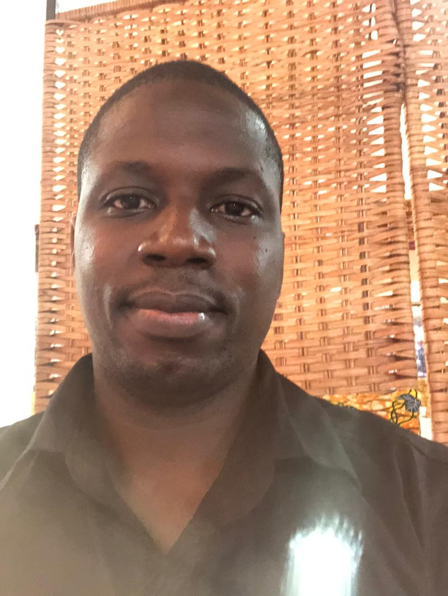

Florian Adu Kausche | WDD 130
Hello my name is Florian Adu Kausche, I am from Accra Ghana, I love coding so much and I can't wait to become a professional.Florian Adu Kausche, a dynamic and aspiring full-stack developer, combines a profound passion for technology with a rich background in business administration and social media marketing. With an unwavering commitment to mastering the intricacies of software development, Florian brings a unique blend of technical expertise and strategic acumen to every project he undertakes. Driven by an insatiable curiosity and an innate problem-solving mindset, Florian navigates the ever-evolving landscape of technology with agility and precision. His journey into the realm of software development stems from a profound understanding of the intersection between innovation and business strategy, fueled by a relentless desire to create impactful solutions that transcend conventional boundaries. Florian's foundation in business administration equips him with a holistic understanding of organizational dynamics and market trends, allowing him to seamlessly integrate technological advancements into strategic business objectives. Coupled with his proficiency in social media marketing, Florian possesses a keen awareness of the digital ecosystem, harnessing its power to amplify brand presence and drive engagement. As an aspiring full-stack developer, Florian thrives in environments that challenge him to think critically, adapt swiftly, and collaborate effectively. Whether architecting scalable web applications, optimizing user experiences, or delving into backend infrastructure, Florian approaches each endeavor with a meticulous attention to detail and a relentless pursuit of excellence. Beyond his technical prowess, Florian embodies a collaborative spirit and a steadfast commitment to continuous learning. With an eye towards the future, he remains at the forefront of emerging technologies, eager to embrace innovation and pioneer transformative solutions that shape the digital landscape. In Florian Adu Kausche, you'll find not just a skilled software developer, but a visionary leader poised to make a lasting impact in the realm of technology and beyond.